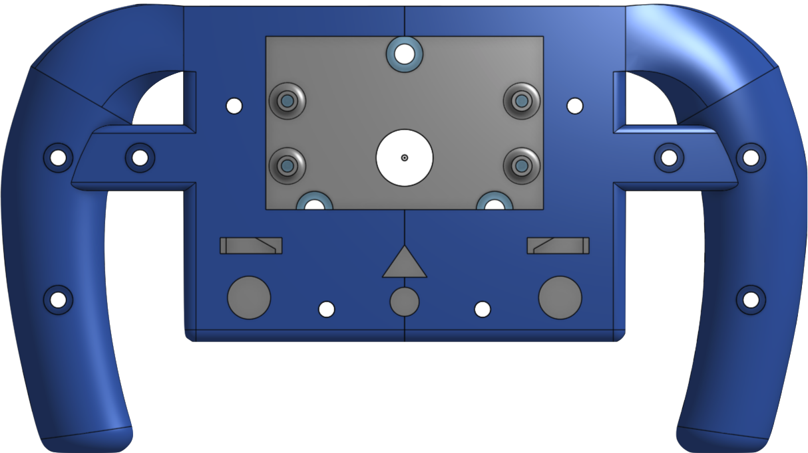

Computers are ubiquitios in the modern world we live in, and in the automobile there is no exception. Modern cars are controlled by a complex interconnection of microcontrollers, and at the core of this is a communication backbone called Control Area Network (CAN). CAN enables robust and scalable peer to peer communication among microcontrollers.
On UBC Supermileage student team, we build highly efficent ICE, battery electric, and hydrogen electric vehicles. We are using SPI for communication within the vehicles, but we are facing reliability, scalability, and debugability issues.
SPI is a great protocol for short distance host/periphrial communication, but it is not up to the task of what we are typing to acomplish. Every new node (sensor or actuator) we put into the vehicle means another chip select (SS) wire must be run, and another GPIO slot must be taken up on the host device. One can quickly see the scalability issues here.

In terms of reliability, SPI is susptable to motor noise which can cause communications to fail. Furthermore, SPI is a wiring and debugging nightmare when there are many long distance periphrial device connections.
As we continue to incorportate more complex sensors, actuators and compute into our cars, it is clear another communication solution is necessairy, and moving to CAN is the obvious choice. Furthermore, I am also working on designing a new steering wheel for Supermileage ElectricUrban concept vehicle. Thus, this was a good opertunity to incorportate these projects and implement a CAN node in the steering wheel to send driver input and recieve vehicle information which will be displayed on a screen for the driver.
- Peer to peer: unlike SPI, there is no host or periphrial device in a CAN bus, every device has equal right to send and recieve messages onto the bus.
- Asynchronous: This means that the data is transmitted without the use of an external clock. This is great for long distance protocols as clock skew won't hinder or break the communication.
-
Message based: Data is sent in packets over the CAN bus, these packats have a specific dataframe structure to comply to the CAN standard.
 Lets break down the most important parts of the dataframe:
Lets break down the most important parts of the dataframe:
- 11 bit identifier: This is the CAN ID, which is used to determine which message is meant for which devices. All devices on the bus have access to all the messages, but a device will only read messages with CAN ID's which it is programmed to look for. Note that if there are multiple messages waiting to go on the bus the one with the lowest CAN ID gets priority.
- Data: This is 8 bytes which is the content of the message that is being sent
- Cyclic redudancy check (CRC): This is an error checking code to determine if the communication was sucessful or indicate if there were any corrupt bits. This gaurentees that the message received was the ones that was sent.
- Differential: CAN uses differential signaling to tranmit messages over a twisted pair of wires. Meaning that each bit of data is encoded into complementary bits and each is sent over their own wire. These wires are called CAN high, and CAN low, and form the CAN bus backbone. Differential signaling is highly immune to electromagnetic interference (EMI), making CAN very reliable.
- Scalable: CAN is a flat protocol, only requiring CAN high and CAN low wires. A new node can be added to the bus without difficulty, you just need to tap into the bus lines.
Inside each node on the CAN bus there is a microcontroller, CAN controller and CAN transiever. The microcontroller talks to the CAN controller which talks to the CAN transiever which then communicates with the CAN bus sending and recieving data from other nodes. A bit confusing, but lukily the CAN controller is typically built into the microcontroller, which makes our lives easier. We just need to make sure to add a transiever conveting CAN RX (recieve) and CAN TX (transmit) which are exposed on the microcontrollers GPIO to CAN high and CAN low lines of the CAN bus. You may have also noticed that on either end of the CAN bus, there are 120 Ohm resistors briding CAN high and CAN low. The purpose of these terminal resistors is to impedence match the charasticic impedence of the transmission lines, minizing reflections which could cause signal interference.
Thus to summarize, to implement the CAN bus we need:- 2 lines, CAN high and CAN low which are termined by 120 Ohm resistors
-
CAN nodes, which consist of:
- A microcontroller that has a CAN controller
- A CAN transiever
The first thing I considered is the steering wheel requirements:
- Typical button functions: lights, horn, blinkers, whipers and hazards
- Dead man switch: this is a driver monitoring device which will kill the propulsion system when the drivers hands come off the steering wheel. To achieve this I decided to go with an IR sensor so this was non-intrusive to the driver
- Brake and throttle inputs
- Send all the driver input data over the CAN bus to be used by other nodes to achieve the desired functions (ex. motorcontroller recievs throttle data and sets speed accordingly)
- Screen to display speed, power and lap time information to the driver
- Quickly able to detatch: to achieve this I used a quick release system
- Easy programming and debugging, expose the usb port
Here is a first draft of button placement and general overview of what the wheel is going to look like. The general idea is a four component mechancial system which consists:
- Waterjet aluminum plate which will take transfer loads from the driver twisting the wheel to the quick release
- Quick release which allows quick detatching (mechanically and electrically) of the wheel, and when attached will transfer load to the steering column
- Back 3D printed piece which will house the PCB
- Front 3D printed piece which is what forms the handles and houses the buttons
The mechanical and PCB design were done in parallel as they were highly interdependent. The final mecahnical CAD can be seen below. 
The electical design was a PCB with included an STM32L432KC mbed enabled microcontroller, as well as a CAN transiever, a TFT 2.2" display and all appropriate input connections.
The software can be found here, note that I used mbed libraries to implement CAN in C++ as described in the CAN Background section.
Here is the final prototype